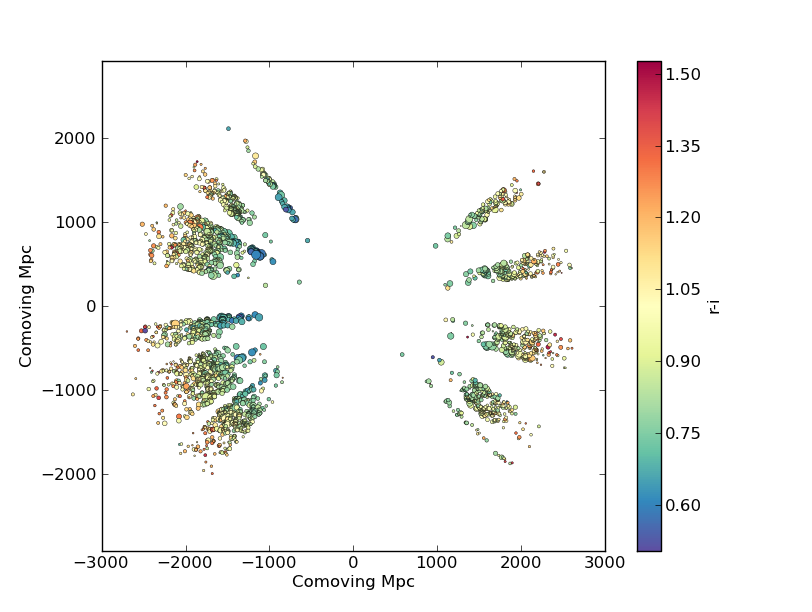

Example scatter plot¶
In this example we’ll plot the space and redshift distribution of luminous red galaxies (LRGs) from the 2SLAQ survey. The catalogue is available here: http://www.2slaq.info/2SLAQ_LRG_v5pub.cat. First we’ll read the required columns from this text file and plot the galaxy distribution in a thin declination slice, showing the galaxy brightness by the point size, and colouring points by the r-i colour:
import numpy as np
import matplotlib.pyplot as plt
from scipy import integrate
from math import sqrt
# To plot the space distribution we need to convert redshift to
# distance. The values and function below are needed for this
# conversion.
omega_m = 0.3
omega_lam = 0.7
H0 = 70. # Hubble parameter at z=0, km/s/Mpc
c_kms = 299792.458 # speed of light, km/s
dH = c_kms / H0 # Hubble distance, Mpc
def inv_efunc(z):
""" Used to calculate the comoving distance to object at redshift
z. Eqn 14 from Hogg, astro-ph/9905116."""
return 1. / sqrt(omega_m * (1. + z)**3 + omega_lam)
# Now read the LRG positions, magnitudes and redshifts and r-i colours.
r = np.genfromtxt('2SLAQ_LRG_v5pub.cat', dtype=None, skip_header=176,
names='name,z,rmag,RA,Dec,rmi',
usecols=(0, 12, 26, 27, 28, 32))
# Only keep objects with a redshift larger than 0.1 and in a narrow
# declination slice around the celestial equator
condition = (np.abs(r['Dec']) < 0.2) & (r['z'] > 0.1)
r = r[condition]
# Calculate the comoving distance corresponding to each object's redshift
dist = np.array([dH * integrate.quad(inv_efunc, 0, z)[0] for z in r['z']])
# Plot the distribution of LRGs, converting redshifts to positions
# assuming Hubble flow.
theta = r['RA'] * np.pi / 180 # radians
x = dist * np.cos(theta)
y = dist * np.sin(theta)
# Make the area of each circle representing an LRG position
# proportional to its apparent r-band luminosity.
sizes = 30 * 10**-((r['rmag'] - np.median(r['rmag']))/ 2.5)
fig = plt.figure()
ax = fig.add_subplot(111)
# Plot the LRGs, colouring points by r-i colour.
col = plt.scatter(x, y, marker='.', s=sizes, c=r['rmi'], linewidths=0.3,
cmap=plt.cm.Spectral_r)
# Add a colourbar.
cax = fig.colorbar(col)
cax.set_label('r-i')
plt.xlabel('Comoving Mpc')
plt.ylabel('Comoving Mpc')
plt.axis('equal')
This produces the image:
Now we’ll plot a histogram of the redshift distribution. This example demonstrates plotting two scales on the same axis – redshift along the bottom of the plot, corresponding distance along the top:
zbins = np.arange(0.25, 0.9, 0.05)
fig = plt.figure()
ax = fig.add_subplot(111)
plt.hist(r['z'], bins=zbins)
plt.xlabel('LRG redshift')
# Make a second axis to plot the comoving distance
ax1 = plt.twiny(ax)
# Generate redshifts corresponding to distance tick positions;
# first get a curve giving Mpc as a function of redshift
redshifts = np.linspace(0, 2., 1000)
dist = [dH * integrate.quad(inv_efunc, 0, z)[0] for z in redshifts]
Mpcvals = np.arange(0, 4000, 500)
# Then interpolate to the redshift values at which we want ticks.
Mpcticks = np.interp(Mpcvals, dist, redshifts)
ax1.set_xticks(Mpcticks)
ax1.set_xticklabels([str(v) for v in Mpcvals])
# Make both axes have the same start and end point.
x0,x1 = ax.get_xlim()
ax1.set_xlim(x0, x1)
ax1.set_xlabel('Comoving distance (Mpc)')
plt.show()


{kind=link}